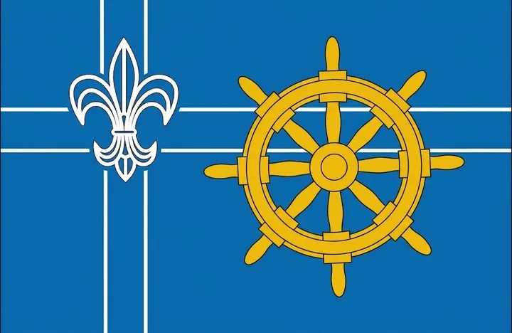

CPD
Der bundesweite Verband mit Bundesführung und eigenem Bundeshof.
Über uns
Seit 1996 verbindet die Landesmark die Gruppen der Christlichen Pfadfinderschaft Deutschlands im Norden – von Leer bis Hohenwestedt, von Hamburg bis Twistringen.
Namensursprung
Hinterm Deich zu Hause.
Achter'n Diek – oft auch „Achtern Diek“ geschrieben – kommt aus dem Plattdeutschen und bedeutet „hinterm Deich“. Die Lage hinter den Deichen von Nord- und Ostsee sowie ihrer Zuflüsse Ems, Weser und Elbe verbindet die norddeutschen CPD-Gruppen.
Auf unserer Fahne stehen das goldene Steuerrad für die Seefahrt und die weiße Lilie auf dem Kreuz für die CPD.

Unser Aufbau
Die Landesmark ist eine von mehreren Landesmarken der Christlichen Pfadfinderschaft Deutschlands. Mehr über die CPD
Der bundesweite Verband mit Bundesführung und eigenem Bundeshof.
Die Gruppen in Bremen, Niedersachsen, Hamburg und Schleswig-Holstein.
Bremen, Holsatia, Chauken und Weserland – regionale Zusammenschlüsse.
Stämme, Siedlungen und Neuanfänge mit ihren Sippen und Meuten.
Chronik
Gemeinsam unterwegs
Das große Lager aller Gruppen der Landesmark – mit Schwarzzelten, Wettbewerben und Gottesdienst.
Einmal im Jahr kommen Vertreter:innen aller Gruppen zusammen, beraten und wählen die Landesmarkführung, den „Deichrat“.
Kurse für Sippen- und Stammesführungen, Erste-Hilfe-Kurse und die jährliche Kreuzpfadfinderrüste auf dem Bundeshof.
Aktionen für die Jüngsten und musikalische Wettstreite zwischen den Gruppen.
Unser Lied
Seit 1998 hat die Landesmark ihr eigenes Lied. Uraufgeführt wurde es vom Stamm Dietrich Bonhoeffer auf dem Landesmark-Singewettstreit in Bremervörde.
Akkorde je Zeile: e – D – C – H7
Die 4. Strophe singt jeder Stamm mit seinem eigenen Namen und Ort – meist entsteht dabei ein fröhliches Durcheinander, bei dem jede Gruppe die andere übertönen will.
Text & Melodie: Torsten Sethmann, 1998. Die 3. Strophe ist an die heutigen Gaue angepasst.
Joh, Achter'n Diek, wir gehören zu dir.
Ja, hinter dem Deich, da könnt ihr uns finden.
Joh, Achter'n Diek, so schön ist es hier bei dir.
Wir haben hier viel Wasser, doch das ist uns egal,
denn unsre hohen Deiche, die halten allemal.
Und schwappt es auch mal über, so stehn wir Hand in Hand,
um gemeinsam zu schützen unser schönes Land.
Man sagt, wir sprechen anders als das restliche Deutschland,
doch ist es auch nicht schlimmer als in dem Schwabenland.
Platt schnacken tut hier jeder von Hoya bis nach Kiel.
Kannst du nur Hochdeutsch sprechen, verstehst du wohl nicht viel.
Unsere vier Gaue heißen Bremen, Weserland,
auch Chauken und Holsatia – habt ihr sie nicht gekannt?
Viele bunte Köpfe stecken hier beisamm'.
Wir stehen noch am Anfang und fangen jetzt erst an.
Im Herzen unseres Landes liegt eine schöne Stadt,
natürlich Bremervörde, die auch CPDer hat.
Seit über sechzig Jahren bereichern wir die Welt.
Klar, dass jeder viel vom Stamm Dietrich Bonhoeffer hält.
Landesmarkführung
Die Landesmark wird ehrenamtlich von einer Landesmarkführung mit zwei Stellvertretungen geleitet, die auf dem Landesmarkthing gewählt wird. Unterstützt wird sie von Beauftragten für Wölflingsarbeit, Kasse, Schulung und Kreuzpfadfinderarbeit.